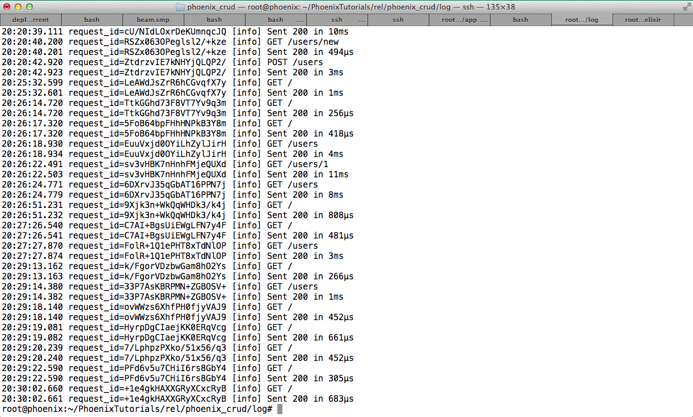

Lesson 0
What You're Getting Yourself Into...
In this tutorial you're going to build a simple CRUD app using Elixir and the Phoenix Framework. It will support new, create, index, edit,update,destroy and a homepage.
When served in a production environment, some pages will be rendered in micro-seconds:
This tutorial assumes you have experience building web applications in other languages and frameworks.
Sometimes I will make analogies to Ruby on Rails, so if you're not a pro at Ruby on Rails, some of this stuff might be confusing and not make sense.
If you follow through the entire tutorial, you'll build a web application with Phoenix and Elixir that shows a random user generated quote, pulled from a Postgres database about why you should learn Elixir that looks something like the following screenshot: